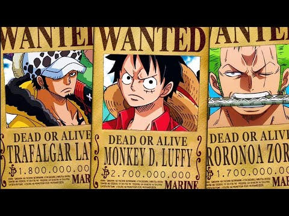
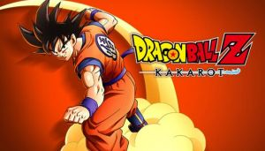
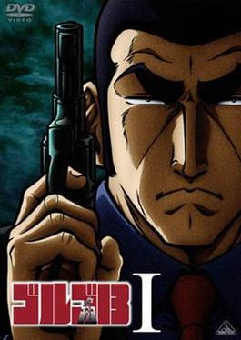
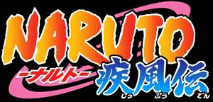
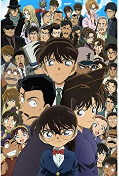

Clique aqui nas coroas

One Piece é uma série de mangá escrita e ilustrada por Eiichiro Oda. Os capítulos têm sido serializados
na revista
Weekly Shōnen Jump desde 22 de julho de 1997, com os capítulos compilados e publicados em 96 volumes
tankōbon pela
editora Shueisha até abril de 2020. One Piece conta as aventuras de Monkey D

As aventuras de um poderoso guerreiro chamado Goku, seu filho Gohan e seus aliados, que se esforçam para defender
a
Terra das ameaças. Eles são auxiliados por um dragão que concede os desejos de quem quer que reúna as sete
Esferas
do Dragão.

Golgo 13: O Profissional, conhecido simplesmente como Golgo 13 no Japão, é uma adaptação cinematográfica japonesa
do
mangá Golgo 13 lançado em 28 de maio de 1983 pelo Tokyo Movie Shinsha. É o primeiro filme de animação baseado no
mangá e no terceiro filme em geral

Naruto é uma série de mangá escrita e ilustrada por Masashi Kishimoto, que conta a história de Naruto Uzumaki, um
jovem ninja que constantemente procura por reconhecimento e sonha em se tornar Hokage, o ninja líder de sua
vila.

Detective Conan, conhecido como Case Closed nos Estados Unidos, é um mangá e anime japonês escrito e
ilustrado
por
Gosho Aoyama e publicado na Weekly Shōnen Sunday desde 1994, onde faz sucesso até hoje, totalizando mais de
90
volumes.
